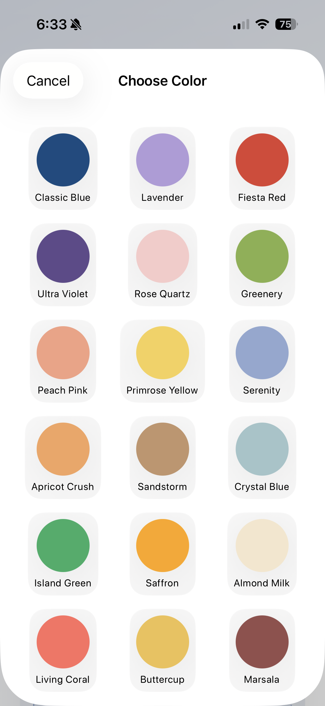

앱 미리보기



색감채집 / Color Foraging / 色あつめ
오늘의 팬톤 컬러를 받고, 일상 속에서 그 색을 찾아 9장의 사진으로 하루를 완성하세요.


완성된 컬러 그리드가 잠금화면 배경으로 자동 설정됩니다. iOS 단축어와 연동해 앱을 열 때마다 업데이트되는 나만의 컬러 잠금화면.

3x3 대형 위젯으로 오늘의 컬러 그리드를 홈 화면에서 바로 확인하세요. 사진이 채워질 때마다 실시간으로 업데이트됩니다.
매일 새로운 팬톤 컬러가 제안됩니다. 30가지 큐레이션된 컬러가 계절에 맞게 순환합니다.
카메라가 실시간으로 색을 감지합니다. 프레임 안에서 가장 선명한 포인트 컬러를 자동으로 찾아냅니다.
촬영뿐 아니라 기존 사진에서도 색을 채집할 수 있습니다. 카메라와 갤러리를 자유롭게 오가세요.
9장의 사진으로 오늘의 컬러를 완성하세요. 완성된 그리드는 하나의 작품이 됩니다.
잠금 화면에서 오늘의 컬러와 진행 상황을 확인하세요.
촬영된 사진에 자동으로 감성적인 필름 톤이 입혀집니다.
앱을 열면 오늘의 팬톤 컬러와 무드가 표시됩니다.
일상 속에서 그 색을 발견하면 카메라로 촬영하거나, 갤러리에서 사진을 불러오세요.
9장의 사진으로 오늘의 컬러 그리드를 채우면 완성! 공유하거나 저장하세요.